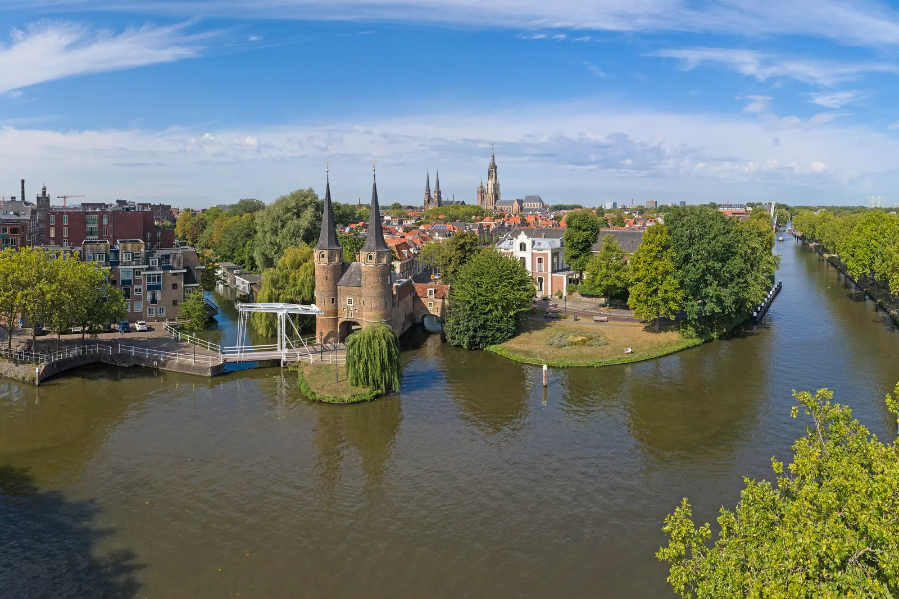

Two cities, one shared direction.
We make rigorous strategy uniquely affordable for organisations doing good—and give top university talent the chance to learn by delivering it.
Delft · Oostpoort 2 / 5
Photo: Ludvig14 · CC BY-SA 4.0
Our story
Founded in Delft. Expanded by design.
Our branch began in Delft in 2019 and expanded to Rotterdam, becoming the first multi-city branch of 180 Degrees Consulting worldwide.
The model is simple: combine TU Delft's technical and engineering depth with Erasmus University Rotterdam's business perspective, then organise that talent around challenges whose outcomes matter.
We serve non-profits, social enterprises, and mission-driven institutions. Impact is our focus, but not a gate: if your organisation is trying to do good, we want to hear the challenge.
At a glance
The branch today
These branch facts are established. Quantified impact belongs in the first Impact Report, not in a speculative template.
Placeholder — impact numbers, honestly sourced, with the first Impact Report
Part of something larger
The world's largest university-based consultancy.
Delft–Rotterdam is one branch in the global 180 Degrees Consulting network, which brings university talent to organisations creating social and environmental value.
That network gives our branch a shared professional standard while leaving project teams close to the organisations and communities they serve.
Explore 180 Degrees Consulting worldwide →
Read the official Delft–Rotterdam branch history →
One standard, applied locally
A project team of 4–6 student consultants and a dedicated Team Leader works through a full consulting cycle, ending with a board-ready presentation and the underlying analysis handed over.
Choose your route
Bring a challenge—or bring your perspective.
Organisations can start with a short intake. Students can see the two roles and recruitment windows for the next cycle.